Xonar
At Xonar, Alex worked as a hardware and systems engineer, bridging embedded electronics, Linux infrastructure, and regulatory compliance across a range of products — including cabinet X-ray and radar-based weapons detections systems. His role spanned a wide range of engineering disciplines including customer-facing technical demonstrations and documentation.
Key Contributions
- Directed hardware design and system integration for embedded platforms, including GPU-based processing, microcontroller subsystems, LED assemblies, and serial communication upgrades for metal detection boards.
- Designed and deployed Linux-based infrastructure supporting data center configuration, multi-camera systems, kiosk environments, and training and display installations.
- Led hardware and software troubleshooting, repair, and continuous improvement efforts for deployed systems across multiple customer sites, improving reliability and field performance.
- Managed regulatory compliance and certification efforts for IEC/UL/EN-61010 and FCC/CE, coordinating with external test labs (Nemko) and ensuring documentation and labeling met international standards.
- Oversaw factory inspections, production readiness, and internal inventory management processes to maintain quality control and traceability.
- Supported pre- and post-sales engineering activities by scoping customer requirements, configuring hardware and software solutions, and resolving technical field issues.
- Delivered technical demonstrations and presentations of cabinet X-ray and radar-based systems, translating complex engineering concepts into clear customer-facing value.
- Created training materials, technical videos, and user documentation to support product launches, deployment, and onboarding.
Skills & Technologies
- Embedded & Systems Engineering
Embedded Linux (Debian/Ubuntu), hardware/software integration, system architecture, edge/embedded deployments, GPU-based processing platforms, microcontroller subsystems, device communication and debugging.
- Programming
C, C++, Python, Java, VHDL — Git, CLI, Vim, VS Code.
- Interfaces & Connectivity
UART, SPI, I²C, serial communication debugging, MQTT, Ethernet/TCP-IP networking.
- Linux & Platforms
Linux system configuration and troubleshooting, Windows environments, Azure (AZ-900 Certified), containerized services (Docker), Google Workspace, Microsoft 365.
- Hardware & Design
Circuit design and repair, PCB-level troubleshooting, FPGA development (Xilinx Vivado), PC hardware architecture and assembly, custom wiring and integration, 3-D printing and mechanical prototyping.
- Product & Compliance
IEC/UL/EN-61010, FCC/CE compliance coordination, production readiness, factory inspections, documentation and labeling.
Gallery
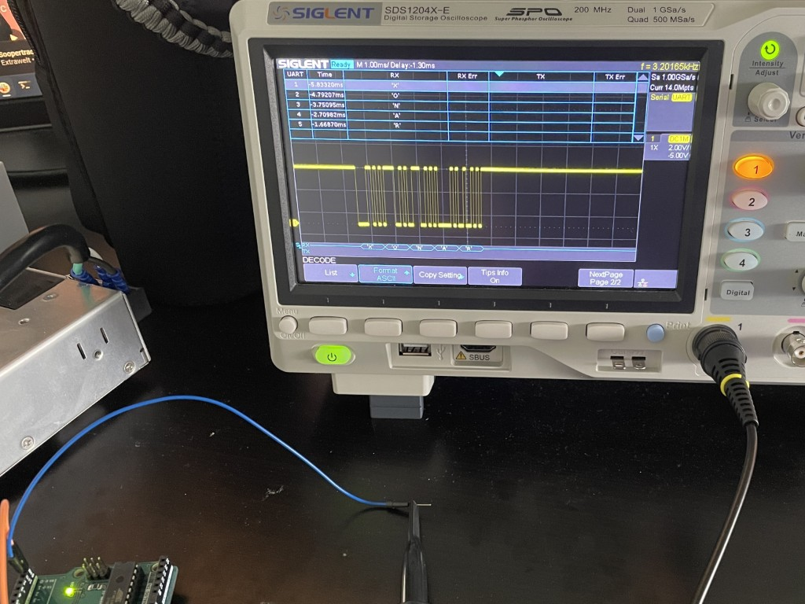
Oscilloscope capture and decoding of ASCII serial data during firmware debugging.
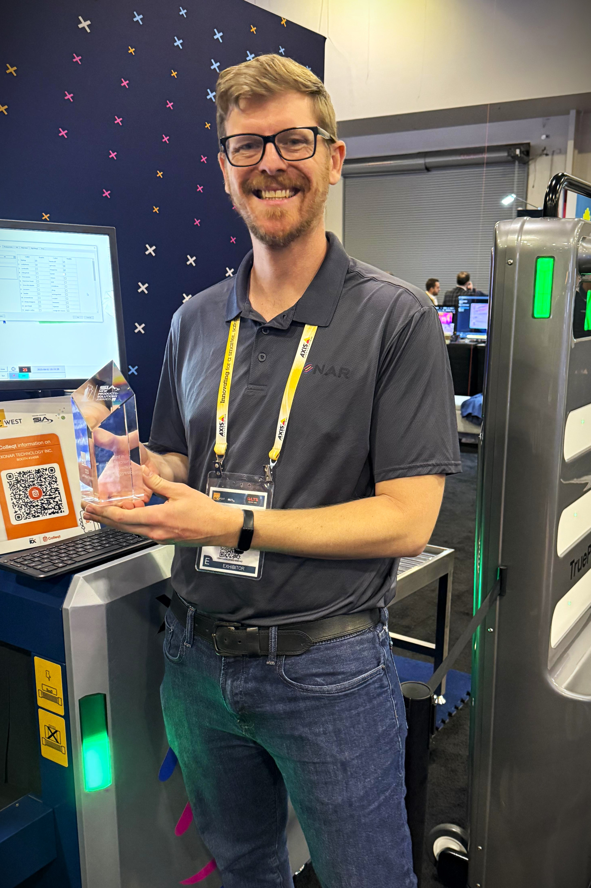
Award won by Xonar for intrusion detection at ISC West.
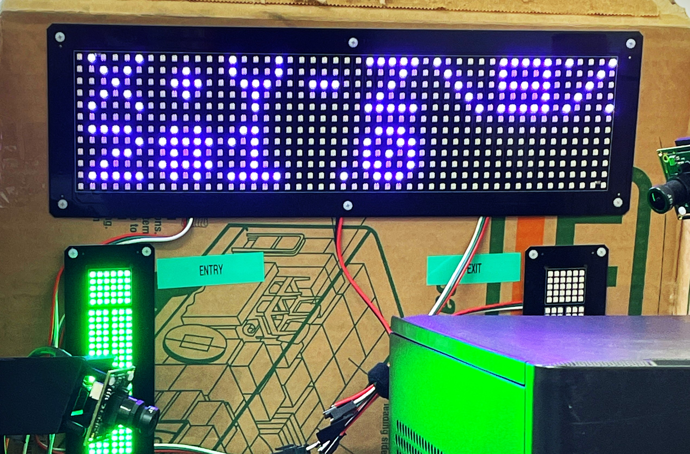
Created custom font library in C++ for the LED via microntroller allowing arbitrary text to be displayed based on serial connection to host computer.
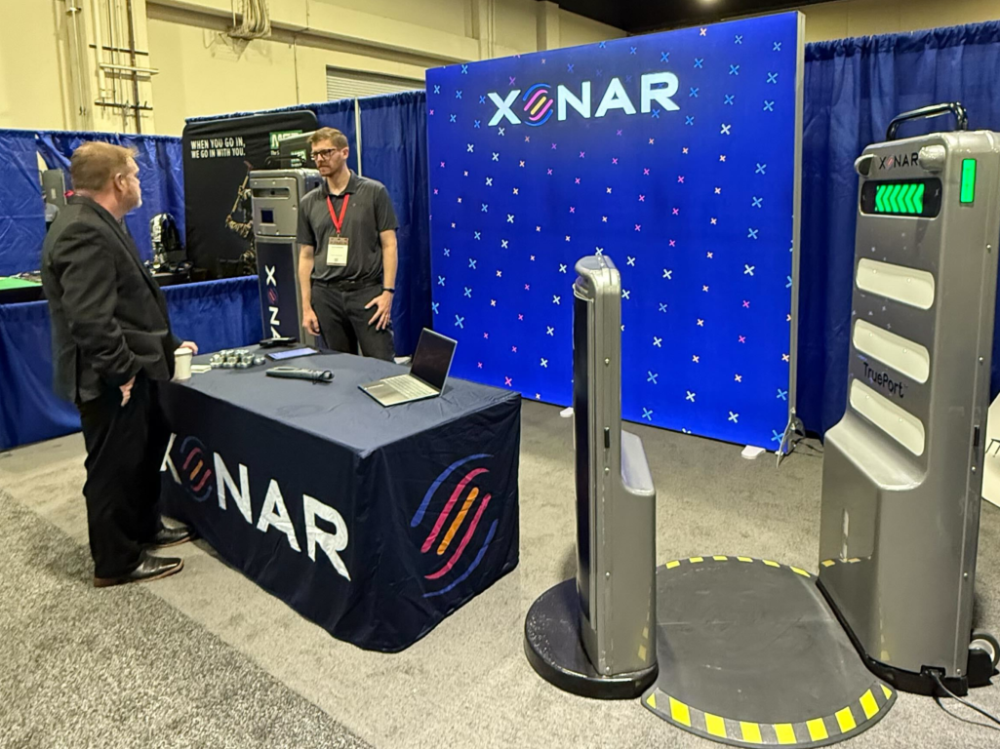
Presenting Xonar at a convention. Alex attended several conventions including ISC West, GSX, and Noble Trex as Xonar subject matter expert.
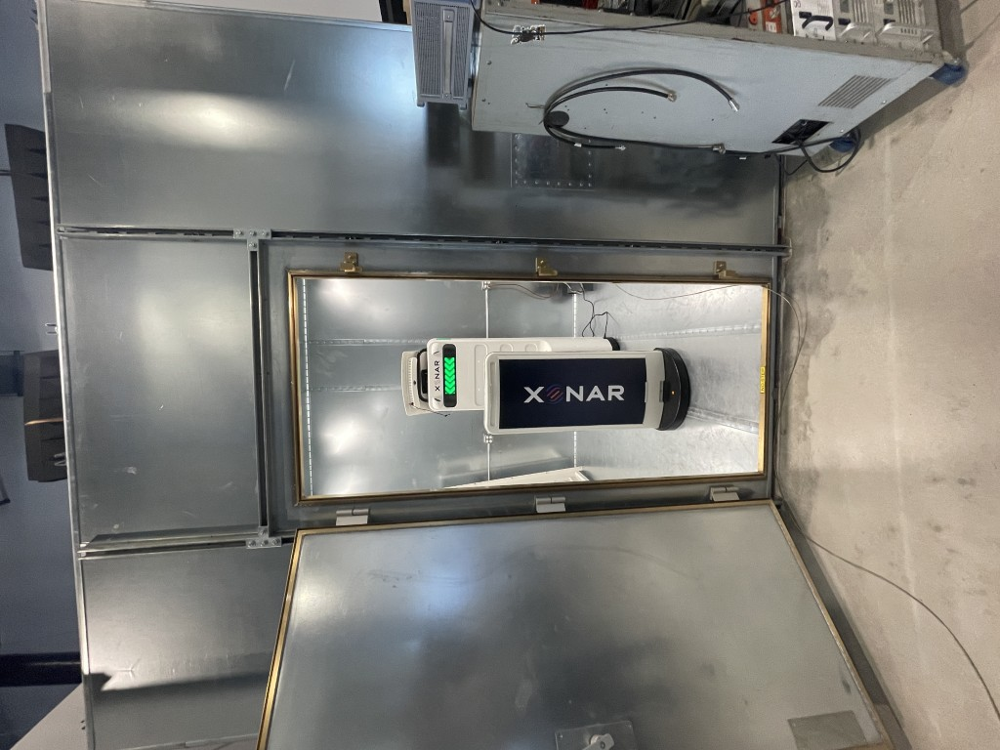
Conducted emission testing for FCC compliance.

Radiated emission testing for FCC compliance.
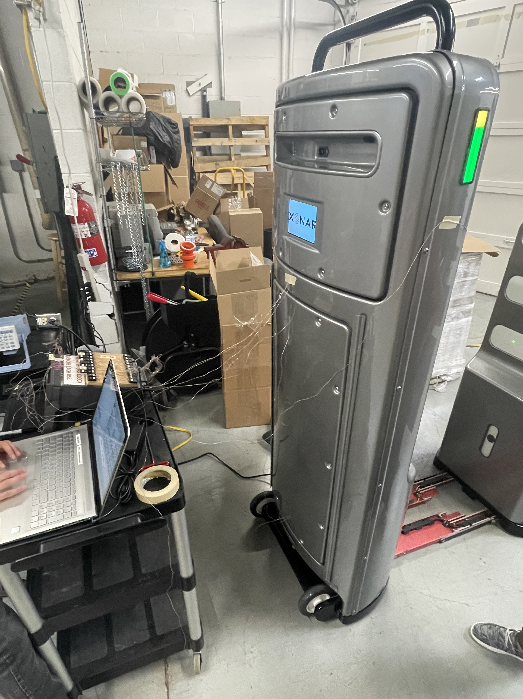
Thermocouple measurements per IEC 61010 safety standards.
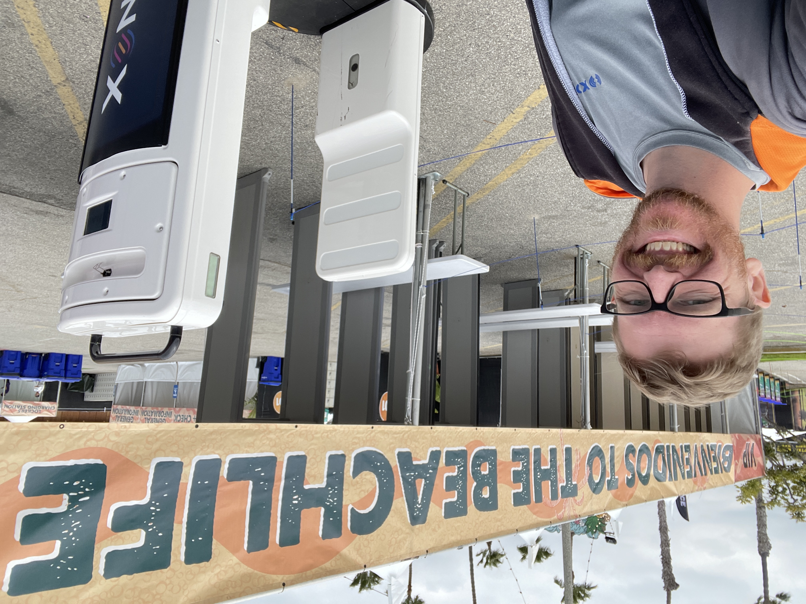
Xonar TruePort system setup at BeachLife Festival. Alex was on site support for many shows and installations.
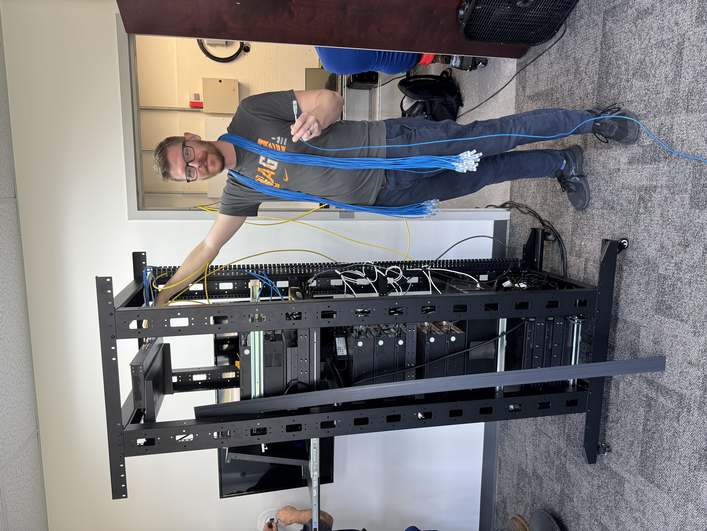
Server rack cable management.
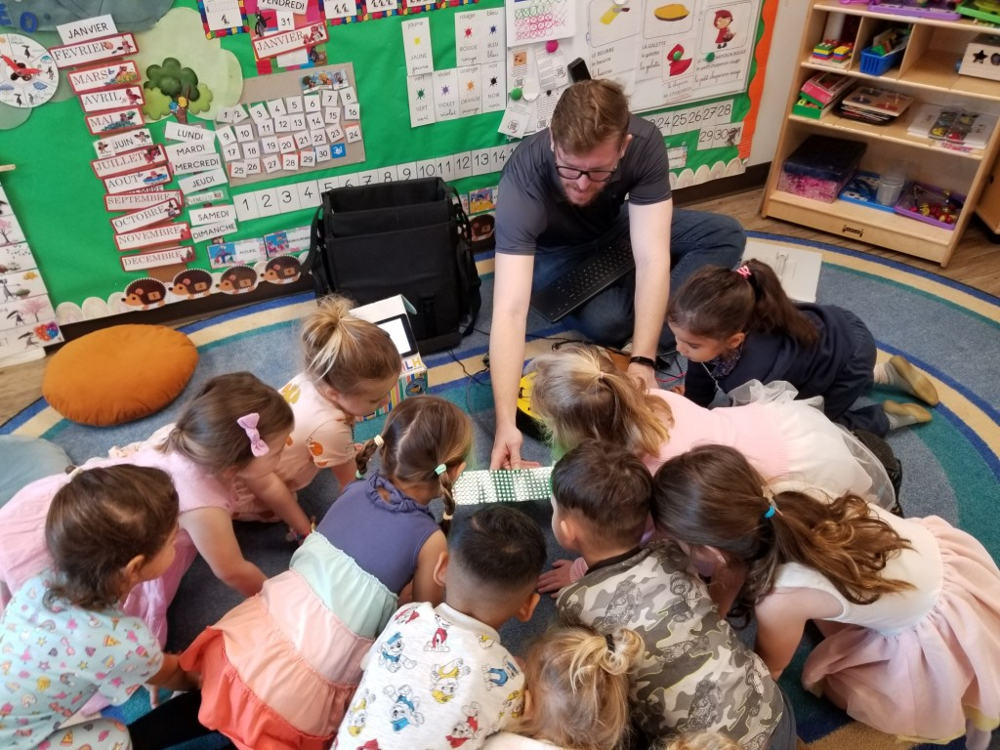
Engaging with the community, teaching kids about electronics and engineering.
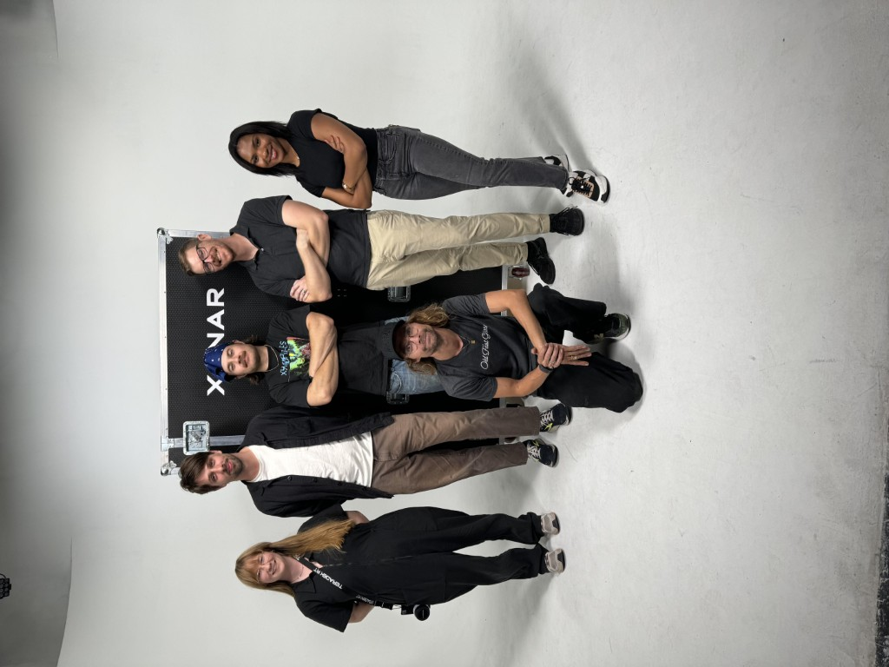
Alex created dozens of hours of promotional and training content for Xonar security devices. For this shoot, Alex directed, scripted, edited, and starred in the promotional video below.
Sizzle Reel
Xonar sizzle reel.
Animations
LED animation sequence to walk forward.
LED animation sequence on prototype device.
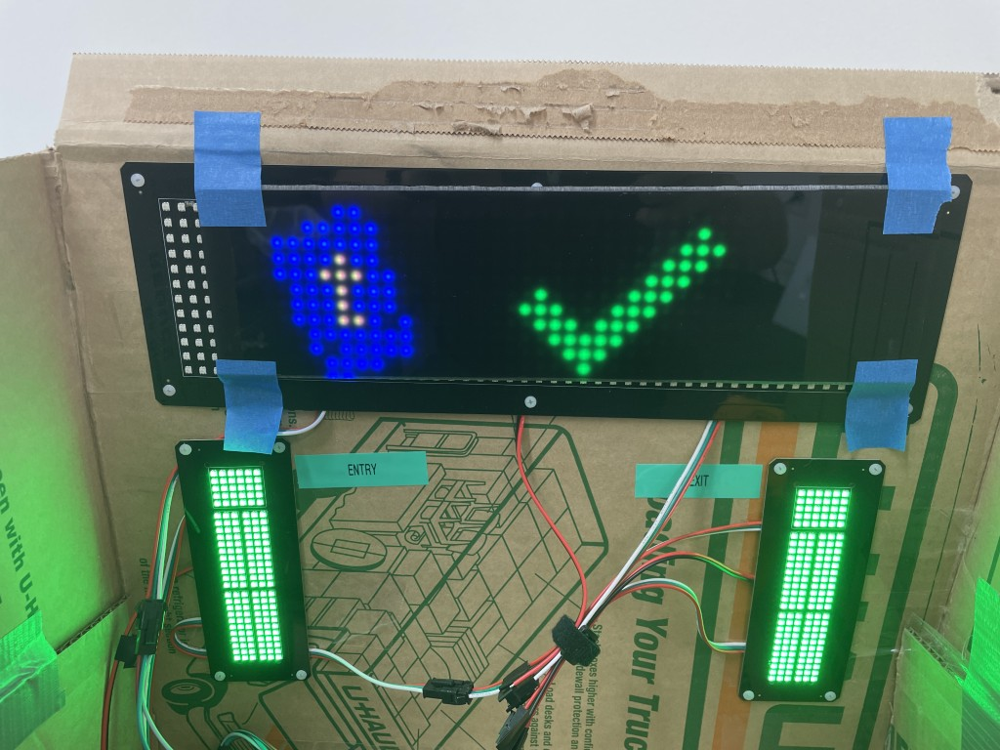
Created custom LED interfaces, including libraries and flash memory management for a variety of different panels.
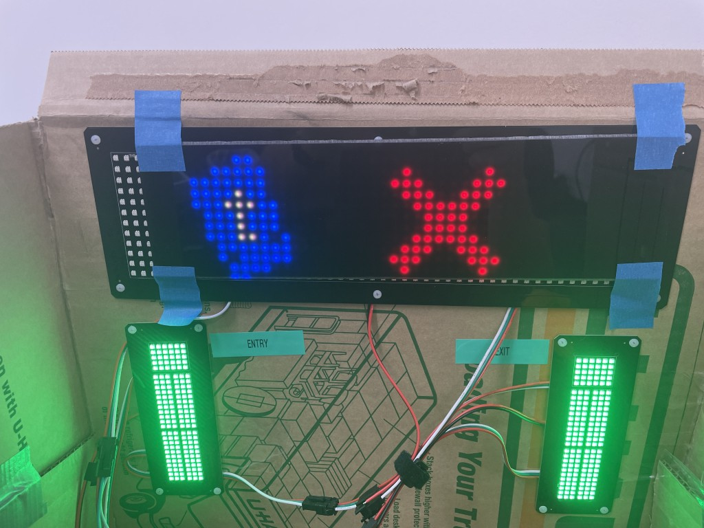
These images show Ticketmaster integration for approved or rejected tickets.
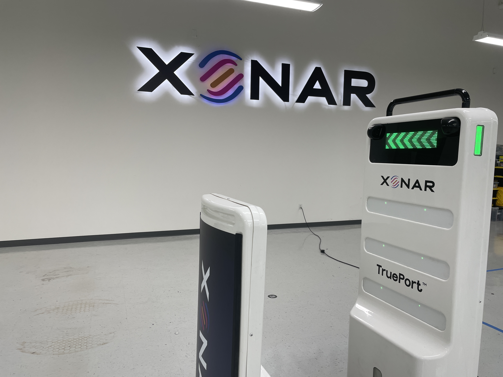
The Xonar facility.